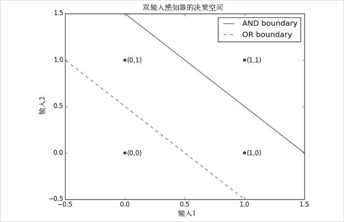

18.1 感知器
感知器 （perception）可能是最简单的神经网络了，或者说是由具有 n 个二进制输入的单个神经元所组成的神经网络。感知器首先会对输入值加权求和，如果加权和大于等于 0，它就会被激活：
def step_function(x):
return 1 if x >= 0 else 0
def perceptron_output(weights, bias, x):
"""returns 1 if the perceptron 'fires', 0 if not"""
calculation = dot(weights, x) + bias
return step_function(calculation)
实际上，感知器只是根据点 x 的超平面将问题空间分隔为两部分而已：
dot(weights,x) + bias == 0
通过正确选用权值，感知器能解决许多简单的问题（图 18-1）。例如，我们可以创建一个与门 （即 AND，也就是说，当两个输入都为 1 时，返回 1；只要输入有一个为 0 时，返回 0），代码如下所示：
weights = [2, 2]
bias = -3
如果两个输入都为 1，则计算结果为 2 + 2 - 3 = 1，所以输出为 1。但是，只要输入中有一个为 0，则计算结果为 2 + 0 - 3 = -1，所以输出为 0。同时，如果两个输入都为 0，则计算结果为 -3，所以输出还是 0。同样，我们还可以建立一个或门 （OR），代码如下所示：
weights = [2, 2]
bias = -1

图 18-1：双输入感知器的决策空间
同样，我们还可以建立一个非门 （即 NOT，它只有一个输入端，并且会把输入的 1 转换为 0，反之亦然），代码如下所示：
weights = [-2]
bias = 1
不过，有些问题是单个感知器所无法解决的，比如，无论你如何尝试，都无法通过一个感知器来构建异或门 （XOR），即两个输入不同时输出为 1，否则输出为 0。这种情况下，我们就需要使用更加复杂的神经网络了。
当然，在建立逻辑门的时候，根本无需惟妙惟肖地模仿神经元，看一眼下面的代码你就明白了：
and_gate = min
or_gate = max
xor_gate = lambda x, y: 0 if x == y else 1
就像真实的神经元那样，当你将它们连接起来时，就会发生许多有趣的事情。